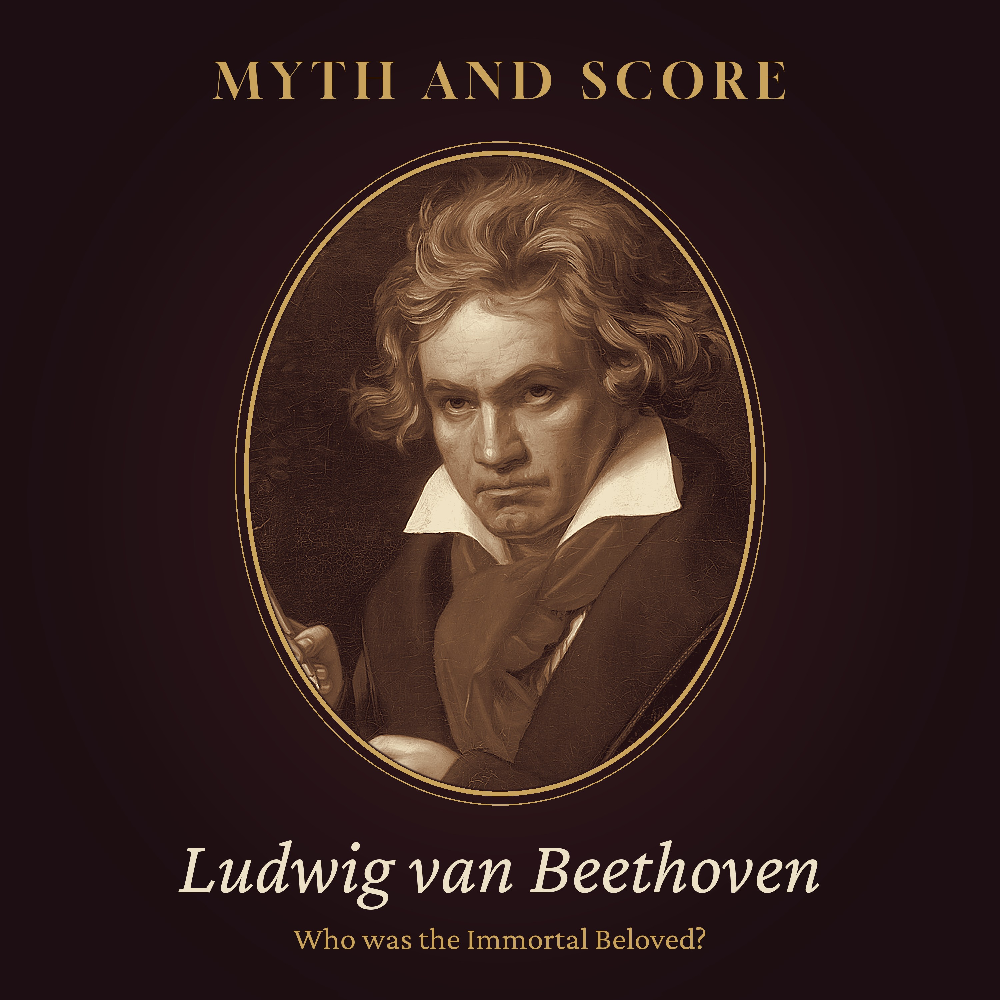

Myth and Score · Episode 2 · 42 min
Who Was Beethoven's Immortal Beloved?
In March 1827, days after Beethoven's death, his friends found a hidden letter in his desk: ten pencilled pages to a woman he called only his Immortal Beloved. No name, no address, no year... just "Monday, the sixth of July". Tonight we follow the clues the way scholars have: the weekday that leaves five possible years, the watermark that settled on 1812, the night journey to the spa town of Teplitz, and a slow post coach to a town called K. Then we meet the women: Giulietta Guicciardi of the Moonlight Sonata, the Brunsvik sisters Therese and Josephine, the singer Amalie Sebald, Bettina Brentano, and her sister-in-law Antonie, the woman Maynard Solomon argued for in 1972. We also look at the 1994 film Immortal Beloved and its sister-in-law twist, which is invention. The verdict is honest: most scholars lean to Antonie Brentano, but it is not proven. Read by a synthetic voice; script written and fact-checked by the show's team. Letters are paraphrased. Chapters: The drawer · The letter · A man of forty-one · Monday the sixth of July · Paper and coaches · The first guess · The sisters · Josephine · The singer and the writer · A house in Vienna · The detective's case · The objections · What he said afterwards · The keeper of the papers · The film · The verdict · The ones who kept the secret Episode picture: Ludwig van Beethoven by Joseph Karl Stieler, 1820, public domain (Wikimedia Commons). Read by a synthetic voice; script written and fact-checked by the show's team.
The script
In March 1827, a few days after Beethoven died, his friends opened a hidden drawer in his desk and found a love letter that no one had ever seen.
It had no name on it, no address, and no year. Only a day of the week, a date, and three words that have puzzled people for two hundred years... my Immortal Beloved.
Myth and Score. Episode two... Who was Beethoven's Immortal Beloved?
This episode is read by a synthetic voice. If these stories keep you company, follow the show... it helps others find it.
On this show, we take the most famous stories about great composers and hold them up to the light. Last time, it was a murder that never happened. Tonight, it is a love story that certainly did happen... we simply do not know with whom.
The question sounds simple. A man wrote a letter to a woman. Who was she?
To answer it, we will open that drawer in Vienna, read the letter slowly, and follow the clues it leaves behind... a weekday, a broken road, a slow post coach, a town called K, and a sheet of paper whose watermark finally gave away the year. Then we will meet the women who have been put forward as the answer, one by one, and see how each case holds up. And at the end, we will look at a film that gave the story an ending of its own.
Chapter one. The drawer.
Ludwig van Beethoven died in Vienna on the twenty-sixth of March, 1827, in his rooms in a house called the Schwarzspanierhaus, the House of the Black Spaniards. He was fifty-six.
He left behind a great deal of music, a nephew he had fought hard to raise, and very little order. His rooms were full of papers, sketchbooks, half-eaten meals and broken pianos. And his friends, sorting through it all, were looking for one thing in particular.
They were looking for money. Beethoven had always said he was poor, but it was believed that he had put something aside for his nephew Karl. A search began.
According to the accounts that survive, the money was found at last in a concealed compartment of a desk. There were seven bank shares, set aside for the nephew. And there was something else beside them. Two small portrait miniatures of women. A long document written twenty-five years earlier, in the village of Heiligenstadt, when Beethoven first understood that he was going deaf... the paper we now call the Heiligenstadt Testament. And a letter, folded small, written in pencil.
Who exactly found it is not quite certain. Most accounts give the credit to Anton Schindler, a young man who had worked as Beethoven's unpaid secretary. One early account names another friend, Karl Holz. The sources disagree, and it is a small sign of what is to come.
What is certain is that the letter passed into Schindler's keeping. He held on to it for the rest of his life. When he died, in 1864, it went to his sister, and in 1880 she sold it to the Royal Library in Berlin. It is still there today, in what is now the Berlin State Library.
Chapter two. The letter.
The letter is written on ten small pages, in pencil, in Beethoven's rushed and difficult hand. It comes in three parts, written over two days.
The first part begins with a line that is quoted in nearly every book about him. In English, it is usually given as... My angel, my all, my very self.
Then he apologises. He can only write a few words today, and in pencil... her pencil, he adds, as if she had given it to him. His lodging is not settled until tomorrow. Then he speaks of their love, and of a difficulty they cannot change. She is not wholly his, he says, and he is not wholly hers. He asks whether their love can last except through sacrifice, and through not asking for everything.
And then, quite suddenly, he tells her about his journey. It was dreadful, he says. The coach took a different road because there were not enough horses, and it was a terrible road. He was warned not to travel at night. He went on anyway, and arrived only at four o'clock the morning before. A Prince Esterházy, he adds, took the usual road with eight horses, and had the same bad luck that Beethoven had with four.
The second part is headed Monday evening, the sixth of July. He has learned that the post only leaves for a place he writes as K on certain days of the week... Mondays and Thursdays... and he is upset that his letter will be delayed. He knows that she is suffering. He tells her that they will surely see each other soon.
The third part is written the next morning, the seventh of July. Here the language rises. He calls her, for the only time in the letter, his Immortal Beloved. He says that he can live only wholly with her, or not at all. He asks her to be calm, to love him, today and yesterday. And he ends with three short lines, each on its own... ever thine, ever mine, ever ours.
That is all. No name. No address. No year. Only the days, the journey, and the town called K.
Was it ever sent? Nobody knows. It may be a draft that he copied out and posted. It may be the letter itself, never sent, or sent and given back to him. All we know is that he kept it, hidden, for the rest of his life.
Chapter three. A man of forty-one.
If the letter belongs where most scholars now place it, in the summer of 1812, then the man who wrote it was forty-one years old.
He was famous. He had written six symphonies, five piano concertos, the opera Fidelio, and most of the piano sonatas that pianists still play today. That spring, he had finished his Seventh Symphony. Within a few months, he would finish the Eighth.
He was also, by then, very hard of hearing. In the Heiligenstadt Testament, ten years earlier, he had written of the shame of standing beside someone who heard a distant flute, when he heard nothing. He had thought of ending his life, and had decided to live for his art. By 1812, conversation was becoming difficult. Within a few years, his friends would have to write their side of it in notebooks.
And he was alone. Beethoven never married. Throughout his life, he fell in love, often with women he could not marry... women who were married already, or who were noble when he was not, or who simply did not love him in return. He proposed at least once, to a young woman named Therese Malfatti, in 1810, and was turned down.
So the man who wrote of being wholly hers, or not at all, was not a young man in his first romance. He was a man in the middle of his life, at the height of his powers, and running out of time to have the life that other people had.
Chapter four. Monday the sixth of July.
Now let us be detectives.
The letter gives us one clue that can be checked like a sum. The second part is headed Monday, the sixth of July. So the sixth of July must fall on a Monday.
In Beethoven's adult life, that happened only in a few years... in 1795, in 1801, in 1807, in 1812, and in 1818. Any other year can be set aside.
That small fact did a great deal of work. It is why different writers have argued for different women... because each year points to a different part of his life, and a different circle of friends.
For a long time, people chose the year that suited the woman they already believed in. Anton Schindler, who had the letter, favoured an early year. The great American biographer Alexander Wheelock Thayer, who spent decades on Beethoven's life in the nineteenth century, thought the letter belonged to around 1806 or 1807.
But the letter has other clues. It speaks of a journey with a broken road. It speaks of a town called K, with a post twice a week. And above all, it is written on paper... and paper, it turns out, has its own memory.
Chapter five. Paper and coaches.
Paper in Beethoven's time was made by hand, in moulds, and each mill pressed its own mark into the sheet... a watermark, visible when you hold the page up to the light.
In the middle of the twentieth century, scholars compared the watermark of the letter's paper with the paper Beethoven used at different times of his life. The match pointed firmly to 1812. Of the five possible years, only one fits.
And once you have the year, the rest falls into place with surprising neatness.
In the summer of 1812, Beethoven went to Bohemia, on the advice of his doctor, to take the waters. At the beginning of July he was in Prague. He left Prague on the fourth of July, and the records of the spa town of Teplitz show that he arrived there on the fifth. That is the morning after a long night on the road... just as the letter says.
The weather that week was bad, and the roads were poor. Other travellers that summer also wrote of trouble on the way. And the story of a prince who travelled with eight horses and still had the same difficulty sits comfortably in that week.
Teplitz, then, is where the letter was written. It is a spa town in the north of Bohemia, today called Teplice, in the Czech Republic.
And K? In the summer of 1812, the obvious K, about a day's coach journey away, was another famous spa... Karlsbad, today Karlovy Vary. A post that went from Teplitz to Karlsbad on set days of the week fits the letter's complaint very well.
It is worth pausing on how unusual this is. Almost nothing in a love letter can be checked. Feelings leave no records. But coaches, post days and paper do. The very things that seem dullest in the letter... the complaint about the road, the grumble about the post... are the things that let us find it on a map. Beethoven, in his hurry, left us a timetable.
So the detective's question becomes much narrower. We are looking for a woman whom Beethoven had probably seen in Prague in the first days of July 1812, and who was going on to Karlsbad, or was already there.
Hold on to that. Every candidate has to pass through that small door.
Chapter six. The first guess.
The first person to name the Immortal Beloved was the man who kept the letter.
In 1840, Anton Schindler published a biography of Beethoven. In it, he printed the letter, and he named the woman he believed it was written to... Countess Giulietta Guicciardi.
She was a real and important figure in Beethoven's life. She was young, and lively, and she came to him as a piano pupil around 1800. In a letter to a friend in 1801, Beethoven wrote of a dear, enchanting girl who loved him, and whom he loved... and most scholars believe he meant Giulietta. In 1802, he dedicated to her a piano sonata, the one in C sharp minor that the world now calls the Moonlight Sonata.
But Giulietta married a count, Wenzel Robert von Gallenberg, in 1803, and the couple later lived in Italy, where he worked in the theatre in Naples. Schindler had placed the letter in the early years of the century. Once the paper showed 1812, Giulietta was a married woman far away in the south, with no known reason to be in Prague or Karlsbad that summer.
Why did Schindler choose her? Partly because her name was known, and partly because the Moonlight Sonata had already become a romantic legend of its own. A famous sonata, a young countess, a deaf composer in love... it made a good story. And Schindler, as we shall see, liked a good story.
She was, very probably, a real love of Beethoven's. She was almost certainly not this one.
Chapter seven. The sisters.
The next candidates came from one family... a Hungarian noble family called Brunsvik, whose house stood at Martonvásár, not far from Buda. And it is worth noticing that Giulietta Guicciardi was their cousin.
In 1799, two Brunsvik sisters came to Vienna with their mother, and both took piano lessons from Beethoven. The elder was Therese. The younger was Josephine.
Therese never married. She lived a long life, founded some of the first nursery schools in Hungary, and kept diaries. Later in life, she wrote warmly of Beethoven, and of the evenings at Martonvásár. Beethoven dedicated a piano sonata to her, and kept a portrait of her.
For a long time, Therese was the favourite. Thayer leaned towards her. In 1909, a German writer who published under the name La Mara wrote a book arguing that Therese was the Immortal Beloved. One of the two miniatures in the drawer was thought to show her.
But again, the paper is unkind. There is no good evidence that Therese was in Prague or anywhere near Karlsbad in July 1812. Her own diaries, read carefully, seem to point not to herself, but to someone close to her.
They point to her sister.
Chapter eight. Josephine.
Josephine Brunsvik is the most serious rival to the woman most scholars favour, and her story is a sad one.
In 1799, at the age of twenty, she was married, at her mother's wish, to Count Joseph Deym, a man nearly thirty years older, who ran a gallery of wax figures in Vienna. He died in 1804, leaving her a widow with small children.
In the years that followed, Beethoven fell deeply in love with her. We know this for certain, because some of his letters to her survive... they were published only in 1957. In them, he writes to her with great tenderness. He calls her his angel, and the only beloved. But Josephine, as a countess, would have lost her children's guardianship and her place in society by marrying a commoner. Gently, and with pain, she drew back.
In 1810, she married again, an Estonian baron called Christoph von Stackelberg. The marriage went badly, and quickly. By the spring of 1812, there was a crisis... money gone, quarrels, and talk of separation.
And then comes the detail that her supporters find most striking. In April 1813, nine months after the letter, Josephine gave birth to a daughter. The girl was given the name Minona. Some have pointed out that it reads, backwards, as anonim... nameless. That is a curious coincidence, though nothing more is proved by it.
Scholars such as Marie-Elisabeth Tellenbach, in the 1980s, and later the Canadian musicologist Rita Steblin, built a careful case. Steblin found a note in Josephine's papers from June 1812, speaking of a wish to travel to Prague. If Josephine went to Prague that summer, she could have seen Beethoven there.
But there is a problem. Nothing shows that she actually went. And nothing places her in Karlsbad, the town called K. Her case is full of feeling, and full of possibility. What it lacks is a record that she was where the letter needs her to be.
Chapter nine. The singer and the writer.
Before we come to the strongest case, two more names, briefly.
The first is Amalie Sebald, a singer from Berlin. Beethoven met her in Teplitz in 1811, and saw her again there in 1812. Some of his playful notes to her survive. In 1909, a German writer, Wolfgang Thomas-San-Galli, went through the guest lists of the Bohemian spas, and decided that she was the answer.
But Amalie arrived in Teplitz later in the summer. She was not in Prague in early July. And Beethoven's notes to her are friendly and teasing, not the language of the letter. Thomas-San-Galli himself later changed his mind.
The second is Bettina Brentano, one of the most remarkable women of her generation... a writer, a correspondent of Goethe, and a lover of music. She met Beethoven in Vienna in 1810 and wrote about him with great excitement. Later, she published letters she said he had written to her, though scholars think at least some of them were improved by her own pen.
In 1811, Bettina married the poet Achim von Arnim. In the summer of 1812, the couple did come to Teplitz. And it was Bettina who helped bring together Beethoven and Goethe, who met there that July for the first time.
But Bettina was newly married, and there is nothing in her life that summer to fit the letter's sorrow, or its journey to K. Few scholars take her seriously as the Immortal Beloved.
And yet her name is important to our story. Because Bettina had a brother, called Franz. And Franz had a wife.
Chapter ten. A house in Vienna.
Her name was Antonie Brentano. She was born in Vienna in 1780, the daughter of a distinguished official and collector, Johann Melchior von Birkenstock.
At eighteen, she was married to Franz Brentano, a wealthy merchant from Frankfurt, and she left Vienna to live in his city. By her own account, she was often unhappy there, and often unwell.
In 1809, she came back to Vienna, because her father was dying. After his death, she stayed on for three years, to sort out and sell his great collections of art and books. Her husband and children came too. And during those three years, Beethoven became a close friend of the family.
The house of the Birkenstocks was a remarkable place. Her father had filled it with paintings, engravings, coins, old books and manuscripts... thousands of objects, gathered over a lifetime. Selling such a collection, piece by piece, was slow work, and for Antonie it was also a way of saying goodbye to the city where she had grown up.
Beethoven was not the only visitor. The Brentano family moved among writers, artists and musicians, and their rooms in Vienna saw many of them. But Beethoven came again and again.
He visited often. When Antonie was ill and kept to her rooms, it is said that he would come, sit at the piano in the next room without a word, play for her, and leave. He wrote a short piano trio for her young daughter Maximiliane, to encourage her playing.
In the late spring of 1812, the business in Vienna was done, and the Brentanos left the city for good. They travelled first to Prague, at the beginning of July. And from Prague, they went on to Karlsbad.
To K.
Chapter eleven. The detective's case.
The man who put all of this together was the American scholar Maynard Solomon. He first set out his argument in an article in 1972, and then in a biography of Beethoven in 1977, which became one of the most widely read books about him.
Solomon did not begin with a woman. He began with the door. Who, he asked, could have been in Prague when Beethoven was there at the start of July 1812, and then in Karlsbad?
He went through the women already suggested, and found that, as far as the records showed, none of them fitted. Giulietta was in Italy. Therese was in Hungary. There was no evidence that Josephine had gone to Prague. Amalie Sebald arrived later. Bettina was not travelling to Karlsbad.
Then he looked at Antonie. The Brentanos were in Prague on about the third of July. They went on to Karlsbad, and stayed there. And Beethoven, a few weeks later, at the end of July, left Teplitz and went to Karlsbad too. He spent time there with the Brentanos, and then went on with them to the nearby spa of Franzensbad.
Solomon added other threads. A week after the letter, Beethoven wrote to a friend in Prague, apologising that he had not been able to keep an appointment on his last evening in the city... which may mean that his last evening was spent with someone else. And Antonie had kept, all her life, a lock of hair and a copy of a poem that Beethoven had given her. Years later, he dedicated to her one of his greatest piano works, the Diabelli Variations.
And there was the letter itself. Its pain fits a woman who is married, whose love cannot become a life. And it fits a woman whose husband, Beethoven's friend, was taking her away... to Frankfurt, far from Vienna, for ever.
Notice how Solomon worked. He did not ask which woman Beethoven seemed to love most, or which story would be most moving. He asked a plainer question... who was in the right place, on the right days... and let the answer come from the registers and the post roads. That is why his case changed the conversation. It was the first to begin with the door, and not with the heart.
It is a careful, patient argument. Many leading scholars have found it the most convincing that anyone has made.
Chapter twelve. The objections.
But an argument is not a proof, and Antonie's case has its critics.
The first objection is the most human one. Antonie was married to a man Beethoven liked and respected, a man who helped him with money and business. She had four children. Could Beethoven really have written such a letter to his friend's wife?
Her supporters answer that he could, and that this is exactly why the letter speaks of sacrifice, and of not being wholly hers.
The second objection is about her body. In the summer of 1812, Antonie was almost certainly in the early months of pregnancy. Her son Karl Josef was born in March 1813. To some, this makes a secret romance that summer very hard to believe. To others, it changes nothing about who Beethoven loved.
The third objection is about the records. Not every scholar reads the spa lists the same way, and some have pointed out gaps, and dates that do not quite line up. One recent biographer noted that the registers do not give the clean picture that is sometimes claimed.
And the fourth is simply this. The case for Antonie is built partly by ruling others out. If even one other woman turns out to have been in Prague that week, the door opens again. The supporters of Josephine believe that she was, and that one day a document will show it.
So the scholars disagree. The weight of opinion leans towards Antonie. It does not lean all the way.
Chapter thirteen. What he said afterwards.
Is there anything in Beethoven's own later words that helps?
There is a little.
In the autumn of 1812, not long after that summer in Bohemia, Beethoven began to keep a private notebook, a kind of diary of thoughts. Its first entry is a hard one. In it, he writes, in substance, that he must submit to his fate... that he can no longer live for himself, only for his art... and that the bond he wanted is not possible.
Four years later, in 1816, a young woman named Fanny Giannattasio del Rio, whose father ran the school where Beethoven's nephew was a pupil, wrote in her diary about something she overheard. Beethoven told her father that five years before, he had come to know a woman, and that a union with her would have been the greatest happiness of his life. But it could not be. Five years before 1816 is near enough to 1812.
In that same year, 1816, Beethoven wrote a cycle of songs called An die ferne Geliebte... To the Distant Beloved. Some listeners have heard in it an echo of the letter. That is a feeling, not a fact. But it is a feeling many people have shared.
None of this tells us her name. It tells us something else, which matters just as much. Whatever happened in that summer was not a passing mood. It was a turning point, and he knew it.
Chapter fourteen. The keeper of the papers.
There is one more person we should look at closely, because so much of the story passed through his hands... Anton Schindler.
Schindler knew Beethoven well in the composer's last years. He wrote one of the first biographies, and for a century, it was trusted.
But in the 1970s, scholars working on Beethoven's conversation books, the notebooks in which visitors wrote their side of a conversation, made an unhappy discovery. Some of the entries in Schindler's handwriting had been added after Beethoven's death. They were written to make Schindler look closer to the composer, and wiser, than he had been. Many of the conversation books, it seems, he had destroyed.
This does not mean that the letter is false. Its handwriting is Beethoven's, and no one doubts it. But it does mean that the man who chose its first answer, Giulietta, was not a careful witness. His guess was a guess, made from a wrong year, by a man who liked to shape the story.
And when, in the 1990s, a filmmaker wanted a narrator to lead an audience through the mystery, he chose Schindler as his detective.
Chapter fifteen. The film.
The film was called Immortal Beloved. It was written and directed by Bernard Rose, and released in 1994, with Gary Oldman as Beethoven, and the Dutch actor Jeroen Krabbé as Schindler.
It is told like a mystery. After the composer's death, Schindler finds the letter and a will, and travels across Europe, visiting the women of Beethoven's past one by one... Giulietta, a Hungarian countess, and others... to find out which of them was the beloved. The music is glorious, and Oldman's performance is fierce and moving.
And the answer the film gives is a twist. The Immortal Beloved, it reveals, was Johanna... the wife of Beethoven's younger brother Kaspar Karl, and the mother of his nephew Karl. In the film, Karl turns out to be Beethoven's own son.
This is fiction. There is no evidence for it at all.
The real Johanna van Beethoven married Kaspar Karl in 1806, and her son Karl was born that same year, six years before the letter. When Kaspar Karl died in 1815, Beethoven fought Johanna in the courts for years to take her son from her. He wrote of her bitterly, and called her the Queen of the Night, after the dark mother in Mozart's Magic Flute. Nothing in his letters, his diary, or the records of that summer suggests that she was in Bohemia in July 1812, or that he loved her.
The film never claimed to be a documentary. It is a love story, built in the shape of a detective story, and it found a surprising, satisfying ending. But it is an ending that history does not give us.
Chapter sixteen. The verdict.
So what is left, when we hold the myth up to the light?
We have a real letter, in Beethoven's own hand, written in Teplitz on the sixth and seventh of July, 1812. That much is about as certain as anything in this field can be... the weekday, the watermark, the journey, and the records of his arrival all agree.
We have a woman he called his Immortal Beloved, who could not be wholly his, and who was very probably on her way to Karlsbad.
We have several candidates who can be set aside with some confidence. Giulietta Guicciardi was a real love, but an earlier one, and far away. Therese Brunsvik was a dear friend, but not in the right place. Amalie Sebald came too late. Bettina Brentano was newly married and elsewhere in her heart. And Johanna, the sister-in-law, belongs to the cinema, not to the documents.
And we have two women left standing.
Josephine Brunsvik, whom Beethoven had certainly loved, whose life was in crisis that summer, and whose daughter was born nine months later... but whom no document places in Prague or Karlsbad.
And Antonie Brentano, who was in Prague that week and in Karlsbad afterwards, where Beethoven joined her family... whose marriage, and whose friendship with him, fit the sorrow of the letter... but whose own words never told us so.
So, who was Beethoven's Immortal Beloved?
The fair answer is this. Most scholars today lean towards Antonie Brentano. Her case is the strongest that has been made, and it fits the evidence best. But it is not proven. A serious minority believe it was Josephine. And unless a new letter, or a diary page, comes to light in some archive, we may never know for certain.
The myth, then, is not that there was a beloved. There certainly was. The myth is that the answer is known.
Chapter seventeen. The ones who kept the secret.
There is one more thing worth saying, and it concerns the women themselves.
Josephine's life after 1812 was not a happy one. Her marriage fell apart, and she lost much of what she had. She died in Vienna in 1821, at the age of forty-two.
Antonie lived a long life. She went home to Frankfurt with her husband and children, and she never saw Beethoven again. But they wrote to each other, and he sent her music. She became known in her city for her charity, and her faith. She died in 1869, at the age of eighty-eight, more than forty years after Beethoven.
If she was the one, then for those forty years she knew. She knew that somewhere there was a letter, in pencil, with her pencil, written to her on a Monday in July. And she said nothing.
Whoever she was, she kept his secret. And he kept her letter... hidden in a drawer, with the money for his nephew and the page about his deafness. The things he could not part with, and could not share.
Perhaps that is the truest answer of all. Not a name, but a place in his life that he kept for her, until the end.
This has been Myth and Score. The sources for tonight's episode are in the notes.
Two hundred years later, the letter is still in Berlin... and it still keeps her name to itself.
Also from the late hours: Embers of History · Slow Orbit · The Quiet Armoury